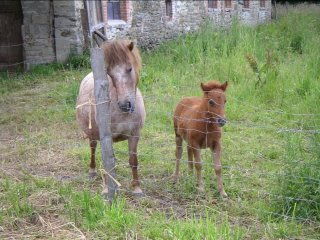
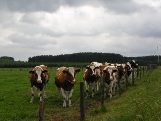
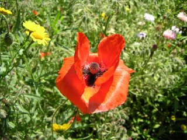
int main(int argc, char *argv[])
{
unsigned long w = 0, h = 0;
//declare image buffers
std::vector<ColorRGB> image1, image2, image3, result;
//load the images into the buffers. This assumes all have the same size.
loadImage(image1, w, h, "pics/photo1.png");
loadImage(image2, w, h, "pics/photo2.png");
loadImage(image3, w, h, "pics/photo3.png");
result.resize(w * h);
//set up the screen
screen(w,h,0, "Image Arithmetic");
//do the image arithmetic (here: 'average')
for(int y = 0; y < h; y++)
for(int x = 0; x < w; x++)
{
result[y * w + x].r = (image1[y * w + x].r + image2[y * w + x].r) / 2;
result[y * w + x].g = (image1[y * w + x].g + image2[y * w + x].g) / 2;
result[y * w + x].b = (image1[y * w + x].b + image2[y * w + x].b) / 2;
}
//draw the result buffer to the screen
for(int y = 0; y < h; y++)
for(int x = 0; x < w; x++)
{
pset(x, y, result[y * w + x]);
}
//redraw & sleep
redraw();
sleep();
}
|
result[y * w + x].r = min(image2[y * w + x].r + image3[y * w + x].r, 255);
result[y * w + x].g = min(image2[y * w + x].g + image3[y * w + x].g, 255);
result[y * w + x].b = min(image2[y * w + x].b + image3[y * w + x].b, 255);
|
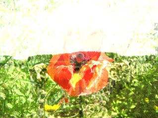
result[y * w + x].r = max(image2[y * w + x].r - image1[y * w + x].r, 0);
result[y * w + x].g = max(image2[y * w + x].g - image1[y * w + x].g, 0);
result[y * w + x].b = max(image2[y * w + x].b - image1[y * w + x].b, 0);
|
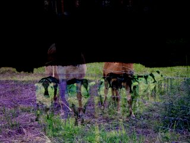
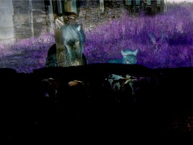
result[y * w + x].r = abs(image1[y * w + x].r - image2[y * w + x].r);
result[y * w + x].g = abs(image1[y * w + x].g - image2[y * w + x].g);
result[y * w + x].b = abs(image1[y * w + x].b - image2[y * w + x].b);
|
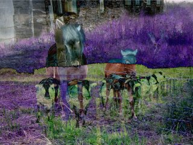
result[y * w + x].r = int(255 * (image2[y * w + x].r / 255.0 * image1[y * w + x].r / 255.0));
result[y * w + x].g = int(255 * (image2[y * w + x].g / 255.0 * image1[y * w + x].g / 255.0));
result[y * w + x].b = int(255 * (image2[y * w + x].b / 255.0 * image1[y * w + x].b / 255.0));
|
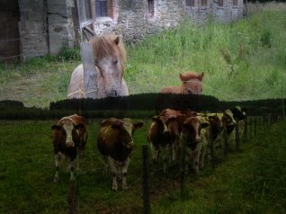
result[y * w + x].r = (image1[y * w + x].r + image2[y * w + x].r) / 2;
result[y * w + x].g = (image1[y * w + x].g + image2[y * w + x].g) / 2;
result[y * w + x].b = (image1[y * w + x].b + image2[y * w + x].b) / 2;
|
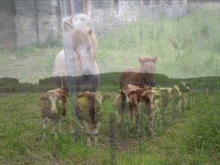
result[y * w + x].r = int(image1[y * w + x].r * 0.75 + image2[y * w + x].r * 0.25);
result[y * w + x].g = int(image1[y * w + x].g * 0.75 + image2[y * w + x].g * 0.25);
result[y * w + x].b = int(image1[y * w + x].b * 0.75 + image2[y * w + x].b * 0.25);
|
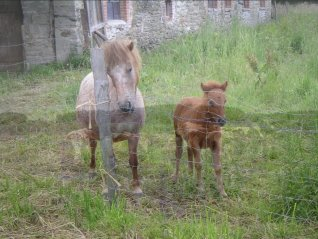
int main(int argc, char *argv[])
{
unsigned long w = 0, h = 0;
//declare image buffers
std::vector<ColorRGB> image1, image2, image3, result;
//load the images into the buffers. This assumes all have the same size.
loadImage(image1, w, h, "pics/photo1.png");
loadImage(image2, w, h, "pics/photo2.png");
loadImage(image3, w, h, "pics/photo3.png");
result.resize(w * h);
//set up the screen
screen(w,h,0, "Image Arithmetic");
float weight;
while(!done())
{
weight = (1.0 + cos(getTicks() / 1000.0)) / 2.0;
//do the image arithmetic
for(int y = 0; y < h; y++)
for(int x = 0; x < w; x++)
{
result[y * w + x].r = int(image1[y * w + x].r * weight + image2[y * w + x].r * (1 - weight));
result[y * w + x].g = int(image1[y * w + x].g * weight + image2[y * w + x].g * (1 - weight));
result[y * w + x].b = int(image1[y * w + x].b * weight + image2[y * w + x].b * (1 - weight));
}
//draw the result buffer to the screen
for(int y = 0; y < h; y++)
for(int x = 0; x < w; x++)
{
pset(x, y, result[y * w + x]);
}
//redraw
redraw();
}
}
|
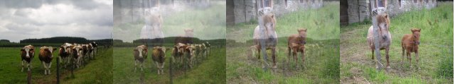
result[y * w + x].r = min(image1[y * w + x].r, image2[y * w + x].r);
result[y * w + x].g = min(image1[y * w + x].g, image2[y * w + x].g);
result[y * w + x].b = min(image1[y * w + x].b, image2[y * w + x].b);
|
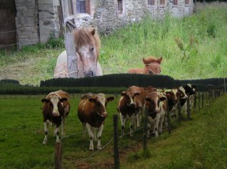
result[y * w + x].r = max(image1[y * w + x].r, image2[y * w + x].r);
result[y * w + x].g = max(image1[y * w + x].g, image2[y * w + x].g);
result[y * w + x].b = max(image1[y * w + x].b, image2[y * w + x].b);
|
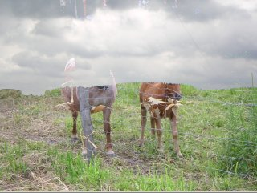
result[y * w + x].r = int(sqrt(double(image1[y * w + x].r * image1[y * w + x].r + image2[y * w + x].r * image2[y * w + x].r)) / sqrt(2.0));
result[y * w + x].g = int(sqrt(double(image1[y * w + x].g * image1[y * w + x].g + image2[y * w + x].g * image2[y * w + x].g)) / sqrt(2.0));
result[y * w + x].b = int(sqrt(double(image1[y * w + x].b * image1[y * w + x].b + image2[y * w + x].b * image2[y * w + x].b)) / sqrt(2.0));
|
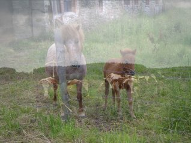
result[y * w + x].r = image1[y * w + x].r & image2[y * w + x].r;
result[y * w + x].g = image1[y * w + x].g & image2[y * w + x].g;
result[y * w + x].b = image1[y * w + x].b & image2[y * w + x].b;
|
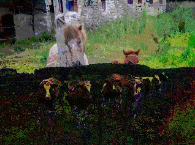
result[y * w + x].r = image1[y * w + x].r | image2[y * w + x].r;
result[y * w + x].g = image1[y * w + x].g | image2[y * w + x].g;
result[y * w + x].b = image1[y * w + x].b | image2[y * w + x].b;
|
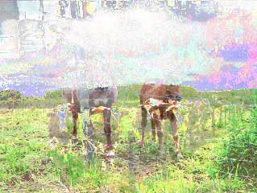
result[y * w + x].r = image1[y * w + x].r ^ image2[y * w + x].r;
result[y * w + x].g = image1[y * w + x].g ^ image2[y * w + x].g;
result[y * w + x].b = image1[y * w + x].b ^ image2[y * w + x].b;
|
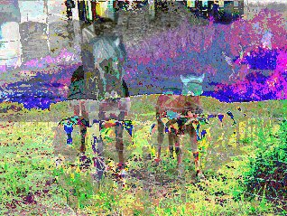